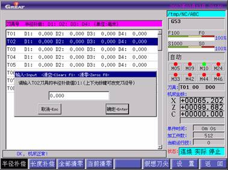
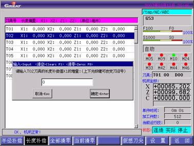
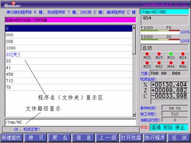
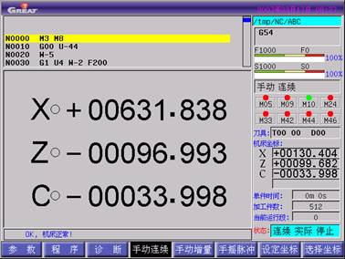
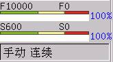
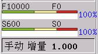
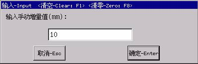

| 成都广泰GREAT150iT数控系统操作 |
按下主功能菜单“参数”软键即可进入参数设置菜单,在参数界面下包括“刀具” 、“参考点” 、“坐标系” 、“速度” 、“#21-100” 、“#101-200” 、 “轴参数” 、“编辑梯图”、“螺补” 、“口令”、“附加参数”、“换刀程序”、“其余” 共13个参数分类 ,按下参数设置菜单对应的键即可进入该参数的设置界面。其中这13个参数是分两屏显示的，这两屏参数是切换是通过“》”和“返回”功能软键来实现的，即在第一屏时按“》”功能软键进入下一屏，在第二屏时按“返回””功能软键返回到上一屏，在任何一屏时按“Esc”键则返回上一级菜单界面。
第一屏参数界面
第二屏参数界面
图1 参数界面
“刀具”是用于设置系统管理刀具的数量、状态，以及相应刀具的补偿量。
“参考点”是用于设置系统参考点1到参考点4在机床坐标系中的坐标值。
“坐标系”是用于设置工件坐标系G54到G59在机床坐标系中的坐标值。
“速度”是用于设置各个轴与速度有关的参数。
“#21-100”是用于设置第21号到100号宏变量参数值。
“#101-200”是用于设置第101号到200号宏变量参数值。
“轴参数”是用于设置与各个轴有关的一些补偿、限制、功能设置等参数。
“编辑梯图” 是用于在线编辑系统内置的PLC梯形图。
“螺补” 是用于设置与各轴螺距误差有关的参数。
“口令” 是用于设置系统操作权限有关的参数
“附加参数”是系统基本功能外增加的一些功能参数。
“换刀程序”是用于编辑控制刀架的模块，用户根据不同刀架的控制方式编辑相应的程序实现刀架的控制。
“其余” 是用于设置系统除上述参数之外的一些不便于归类的杂类参数。
刀具
在“参数”界面下，按下“刀具”软键即可进入刀具参数设置界面，其菜单包括“半径补偿”、“长度补偿”、“全部清零”、“当前清零”、“假想刀尖”、“设置”共六个功能。
“半径补偿”用于设置刀具（尖）半径补偿值。
“长度补偿”用于设置刀具长度补偿值。
“全部清零”可将全部刀具的长度和半径补偿值清零。
“当前清零”可将当前光标所在刀具的长度或半径补偿值清零。
“假想刀尖”用于设置刀具假想刀尖的种类。
“设置”可设置当前设备控制总的刀具管理数量（最多99把刀）。
刀具半径补偿值的设置：
在刀具参数界面下，按下“半径补偿”软键即可进入刀具半径补偿参数设置界面，如图3.6所示每把刀有四组补偿值。移动上下光标键可选择相应的刀具号,然后按“Enter”后弹出对话框,如图：


在本系统中程序管理采用文件管理方式，因本系统具有NAND FLASH存贮器，可存贮32MB数控加工程序。并且用户程序可以采用口令保护。程序编辑采用全屏幕操作方式。
在主界面下，按“程序”对应的功能键则弹出选择程序界面，如图5.2-1所示：

手动是指手动操作运行。在主菜单下，按“手动”软键后,即可进入手动界面，如下图所示：

在手动方式下按“手动连续”软键，则可进入手动连续状态，手、自动状态标示栏显示如图3.77：

在手动方式下按“手动增加”软键，则可进入手动增量状态，手、自动状态标示栏显示如图3.78：

